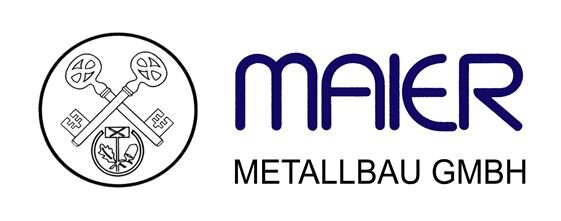

Angaben gemäß § 5 TMG

Maier Metallbau GmbH
Schillerstraße 50
89077 Ulm
Telefon: 0731 63784
E-Mail: Schlosserei-Maier@freenet.de
Vertreten durch
Stefan Maier
Registereintrag
Eintragung im Handelsregister.
Registergericht: Ulm
Registernummer: HRB 1083
Umsatzsteuer-ID
Umsatzsteuer-Identifikationsnummer gemäß §27 a Umsatzsteuergesetz: DE147033013
Angaben zur Berufshaftpflichtversicherung
Name und Sitz der Gesellschaft:
SV SparkassenVersicherung Stuttgart
Haftung für Inhalte
Als Diensteanbieter sind wir gemäß § 7 Abs.1 TMG für eigene Inhalte auf diesen Seiten nach den allgemeinen Gesetzen verantwortlich. Nach §§ 8 bis 10 TMG sind wir als Diensteanbieter jedoch nicht verpflichtet, übermittelte oder gespeicherte fremde Informationen zu überwachen oder nach Umständen zu forschen, die auf eine rechtswidrige Tätigkeit hinweisen.
Verpflichtungen zur Entfernung oder Sperrung der Nutzung von Informationen nach den allgemeinen Gesetzen bleiben hiervon unberührt. Eine diesbezügliche Haftung ist jedoch erst ab dem Zeitpunkt der Kenntnis einer konkreten Rechtsverletzung möglich. Bei Bekanntwerden entsprechender Rechtsverletzungen werden wir diese Inhalte umgehend entfernen.
Haftung für Links
Unser Angebot enthält Links zu externen Webseiten Dritter, auf deren Inhalte wir keinen Einfluss haben. Deshalb können wir für diese fremden Inhalte auch keine Gewähr übernehmen. Für die Inhalte der verlinkten Seiten ist stets der jeweilige Anbieter oder Betreiber der Seiten verantwortlich. Rechtswidrige Inhalte waren zum Zeitpunkt der Verlinkung nicht erkennbar. Bei Bekanntwerden von Rechtsverletzungen entfernen wir derartige Links umgehend.
Urheberrecht
Die durch die Seitenbetreiber erstellten Inhalte und Werke auf diesen Seiten unterliegen dem deutschen Urheberrecht. Beiträge Dritter sind als solche gekennzeichnet. Die Vervielfältigung, Bearbeitung, Verbreitung und jede Art der Verwertung außerhalb der Grenzen des Urheberrechtes bedürfen der schriftlichen Zustimmung des jeweiligen Autors bzw. Erstellers.
Quelltext
Der Quelltext dieser Website ist öffentlich einsehbar: github.com/schlosserei-maier-ulm. Fehler oder Anregungen können dort als Issue gemeldet werden.